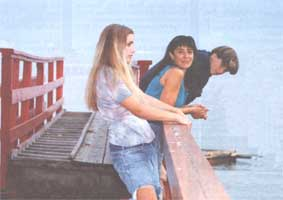
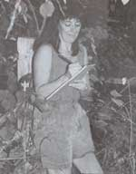
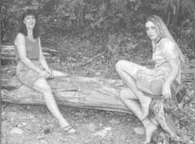
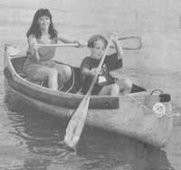
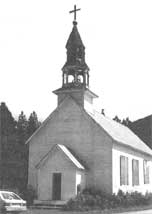

SHUSWAP DIARY
Deanna Kawatski and her two children continue a story of survival away from their familiar wilderness home ...and manage to find new roots.
With all of the changes that have spun into my life in the past two years, in the struggle for survival I've come to realize my most fundamental need: a real home. This may seem strange in a society where we regularly drop our dwellings and pick up new ones like so many discontented turtles. However, in the Ningunsaw Valley I had a home in the ultimate sense, and I lost all desire to live anywhere else; visit perhaps, but not live. No matter how far I roamed on the planet, my intention was to return with zest to our homestead among mountains that still cradled echoes of freedom.
But, as you know, fate had other plans for me. I'm back at Shuswap Lake (where I was born) and today I've retreated to a quiet spot on my mother's property. I'm sitting in a grove of wizened apple trees on a brown, leaf-strewn bank. Around me are horsetails. Back in the Ningunsaw Valley we regularly gathered them for goose food in the spring. They are believed to contain minute traces of gold, and my son Ben wondered years ago when one of our geese would lay a golden egg.
Finally I can see the beauty here again. When I first left the Ningunsaw I couldn't see it anywhere. Now the song sparrows, robins, ravens, red-winged black birds, and osprey have brought me back to alight on the truth of how much natural splendor there still is at Shuswap Lake.
By far the most eminent flowers present today are clusters of golden lady's slippers. Also called moccasin flowers, their claret-striped globes are ever ready to catch and hold a drop of rain. Relatively rare, they have made their annual appearance for as long as I can remember. My mother tells of how my grandfather would wander to the same spot each May to pick a bouquet for his wife's birthday. They resist transplanting and will die if they are removed from their natural setting. I can relate to this since I have always resisted transplanting as well, and I dissolved regularly into tears when, as a child, I had to move from this very home at Magna Bay. Throughout my youth I lived for the summers when I could return.
Leaving the Ningunsaw Valley 35 years later was every bit as painful. I was first cast into a ruthless renting situation in which I watched $600 a month go down a hole, never to surface again in any way that would benefit me and my children. It was guaranteed poverty. Nor was there any incentive to work on the-house or grounds, when any improvements instantly became the property of the landlord. Yet, with real estate prices soaring ever higher (at present, beach property sells at $2,500 per foot), purchasing a home was out of the question.
At the same time, my mother was pondering her own future, wondering how long she would be able to manage her two acres. Succumbing to societal pressure, she sporadically views her 74 years as a fragility, instead of as a strength that has given her a historical view of the world as well as intuitive wisdom. The impulse is to herd the elderly to town where they will have a less demanding life. This tendency taken to its logical conclusion terminates in an institution where they are stripped of most of their possessions and sit in line to wait for death. From my mid-life vantage point, I see my mother as remarkably active and capable. Granted, when the pressure has passed, Mom will proclaim, "I'm not leaving! This is my home. I love it here!" And I cheer her on. Where would she be without her own home and garden - the place that she built with her husband, my father? Some say not to cling to the past. Yet I perceive the essence of roots, the nurturing fingers clutching the earth and offering their splendid gift of grounding. And I can't help but wonder if some of us aren't like the precious lady's slippers - destined to be diminished or even destroyed by the process of transplanting.
One alternative that Mom pondered was selling a portion of her land. If it had a trailer on it, so much the better.
Until Mom was ready to make a move, my daughter Natalia, Ben, and I could rent the trailer, and for now at least, we could have a home.
One year ago, we chose a site on the most undesirable part of the acreage. My basic impulse was to bolt for the birch and cottonwood stand on a hill at the back of the property, but access and water would have been extremely expensive. So we settled in a grassy southwest corner nudging the Squilax-Anglemont Road, where even trees had shunned the soil and no forest would have to be sacrificed.
As much as I loathed this road after the peace of the forest, I also recognized it as the artery that unites the North Shuswap community. The year-round population of 4,000, which mushrooms during the tourist months, is sprawled along a 30-mile stretch of highway from St. Ives to Squilax. The north shore residents are an incongruous blend of farmers, realtors, retired folks, mill workers, natives, loggers, old-timers, and back-to-the-landers. Lacking a nucleus of shops and services, the local people are perpetually on the go to Chase, 30 miles west, and further on to Salmon Arm and Kamloops. Some also commute to work and school in these centers.
Unfortunately, as with many lovely places, Shuswap Lake is under siege by the pressure of increasing population, coupled with a lack of local control over development. Attempts have been made by the community to get a grip on the situation.
But the voice opposing the restrictions of anything even approaching zoning laws has been strident enough to shout them down. As it stands, the most urgent issues facing the community, besides development, are forestry (the surrounding mountains are scarred from clear-cut logging) and pollution of the lake.
From the end of May until September there is a steady parade of tourists, logging trucks, gravel trucks, and motor bikes by my door. I can't help but contrast it with 20 years ago when nearly every car was familiar and their passing was scarce enough to make us pop up from our chairs and stare. Yet despite the fact that I had been content to live three miles away from the nearest road for more than a decade, I understood the practical sides of good access.
When the children and I moved in at the end of June, we had neither water nor the certainty that any was ever going to be found. Between the onslaught of logging trucks and speed-drunk tourists, I negotiated buckets of water across the road from Shuswap Lake back to the kitchen of the gleaming modern trailer. And as summer intensified, hundreds of houseboats, sailboats, Seadoos, and speed boats made the water unsafe for drinking. We were forced then to transport it from places we knew were clean.
NEW ROOTS
Moccasin flowers resist transplanting and will die if removed from their natural habitat. I can relate to that.
Mom and I employed the services of more than one water witcher. Dennis arrived first in May and left a series of red ribbons, especially along the west side. A backhoe delved into the most southwest corner, and we were distressed to see an apple tree topple because of it - particularly when there wasn't even enough water to warrant putting in a well. I inquired about tapping into the lake, like numerous residents do, but the cost included drilling under the road and installing a culvert, for a total of about $4,000. The price compounded with the waiting period for necessary permits made it out of the question.
Next I heard of a water witcher in the community with a glowing reputation for accuracy and we called on him. Old Jim arrived in an expansive green car and set right to work. With an authentic yet false-toothed grin beneath humor-filled blue eyes, he noted how our bodies all have electricity in them. Apparently streams also have electromagnetic fields, and that is what the divining rod detects. With his metal wand he read the rivers of electricity in the ground, and I observed as he stopped at a gravelly spot, lush with horsetails. The rods, which tall, lean Jim had been holding out in front of him, now bent out in opposite directions. With the long finger of a soothsayer, he pointed out the hidden vein that ran southeast from the fence line to a fence post beside the road. Quickly we marked the spot with a stake. And we prayed that he was right because we had learned just how expensive well drilling is. Whether water is located or not, the hole has to be paid for. Nor could diviners give too close an estimate of what depth to which we would have to go.
The next day, Terry, a squat and jolly equipment operator, spent several hours digging to a depth of 15 feet with his backhoe. Sure enough, Old Jim was right. Water trickled out of the side of the hole. With clenched fists, we watched it seep into the cavity. The next step was to wait patiently until the following morning and check the accumulation. Peering bleary-eyed back down into the hole, I was tickled to see the level at least three feet deep. Terry estimated that we would have enough for household use. In the pit, with his backhoe, Terry installed our well - a column of three five-foot-tall cement cylinders.
Once the water was flowing from the taps, our home came to life. Natalia, Ben, and I claimed the new territory with enthusiasm. The loss of the Ningunsaw Valley had affected us all. Yet we weren't the only local residents to lose our home recently.
In March 1994 the headline in the Shuswap Market read "Crisis for Homeless Bat Colony." For what may have been decades, the sole summer residence for an impressive colony of Yuma bats had been the attic and belfry of the Church of St. Peter and St. Paul at Squilax. Numerous articles echoed concern the community felt for their fate. The maternity colony consisted of pregnant females that gathered during the spring, in a suitable location, to give birth and raise their young. On March 14, 1994, while the bats were away for the winter, the historic church burst into flames. One local paper reported that when the heat reached the hefty store of bat manure in the attic, the top of the building blew right off. Within 45 minutes the struc ture was burned to the ground. The cause of the fire still remains a mystery.
The Catholic church had been built in 1910, almost a hundred years after the first white people came into this area. Up until that point, the Shuswap Indians had been nomadic. Then they were forced within the boundaries of small reserves, like the one upon which the church was situated.
The congregation had gradually become accustomed to the hissing presence of countless creatures in the attic above. Some had even joked about putting plastic over their heads to protect themselves from any bat droppings that might slip through the cracks in the ceiling.
The last service to be held in the church was a funeral in 1977, when the bell tolled four times for Jack Sam. Eventually the building, which had fallen into a state of disrepair, was condemned.
It wasn't until 1987 that naturalists at Shuswap Lake Provincial Park discovered this colony of Yuma bats. Soon after, naturalist Chris Harris, who saw the potential for learning much about this misunderstood mammal, began to study them. In the process he discovered that with numbers between 2,000 and 3,000, this was by far the largest maternity bat colony in Canada. He asked for and received permission from the Shuswap Indian people to continue research. Chris was curious about the migration routes of these chocolate-brown creatures and also wanted to find out where the males live while the females are in the maternity colony. Another enigma was where did they hibernate?
"We know from our studies that this church is used by the same bats year after year. Bats banded in 1987 were still there in 1993 breeding and raising their young," Chris stated. In 1989 the church and its colony was the subject of Fifth Estate, a national television program.
In the second week of June, bats begin birthing their young. The normally lone offspring is born naked, helpless, and weighing about two grams. Bats are the only mammals that can truly fly; navigating by echolocation, every night each female soars off in search of food. When she returns to the maternity colony to feed her young, by some mysterious process she is able to identify her own among the squeaking mass.
In four weeks the young are the same size as their mothers. Shortly after that they are flying and on their own. In late summer the bats migrate to a hibernation site.
In 1990, while doing research for the North Shuswap Historical Society, Vera Ellaschuk ventured into the bat church. Even though the lower level remained open, the attic was concealed behind a padlock, and Vera went first to the Shuswap Indian Band office to get the key. There she was directed to a native woman who would supposedly accompany her. However, the woman had other ideas and let Vera know in no uncertain terms that she was on her own.
Vera's husband elected to wait in the car, clutching the key and her camera while she stepped inside the church. Despite an overbearing stench and a steady squeak, squeak, squeak, she found the interior of the church remarkably in order. The pews still stood in neat rows and the linoleum sparkled. A potbellied stove sat staunchly, while the altar, behind a rail of lathe-turned balustrades, was still enhanced with statues and candles.
At the back of the church, stairs led up to a choir loft. As Vera approached, the steady zing, zing, zing increased in volume and intensity as the bats sensed her presence.
Tremulously, she unlocked the trap door that led to the realms above. In the cracks and crevices of mammoth rafters hung gobs of bats. Vera aimed her camera and shot. One flash ignited both the bats and Vera in flight.
She later made arrangements to return to the attic this summer, this time in the company of Chris Harris. It is regrettable that the blaze made ashes of their plans.
Over the years the Band had shown a tolerant attitude toward the bats. This past spring a meeting was held to discuss alternative housing for the Yuma bat colony. Members from the community, including representatives from the Band, the Ministry of the Environment, the schools, and the Squilax store met to hash out ideas for accommodating the colony when they would return in the spring, in late April or early May.
One decision was to make bat houses. On Earth Day, local students constructed several; they resemble oversized bird houses on telephone-type poles. There are now a total of 45 houses at five different sites. Some of the larger ones will hold between 800 and 900 bats.
However, as Chris stated, "Yuma bats using these houses has only been recorded once before in North America." So the community has held a collective breath, waiting and hoping. According to Chris, three or four bats were recently discovered in one house. Bat researchers will continue monitoring the situation next summer. Chris stressed that for the bats, "losing the church was a shock to the system." It would take some time for them to get settled into a new place.
Ah, yes. I know too well the feelings accompanying unexpected homelessness. Yet I also know the possibility of finding a new dwelling - a pursuit made more urgent by the presence of offspring. And if the new home happens to be in the midst of a caring community, so much the better.
Deanna Kawatski's book Wilderness Mother is available for $22.95 from Lyons & Burford Publishers at 212-620-9580.
|
 The Church of St. Peter and St. Paul in Squilax, BC. |
 |
 |
|
 |
 |
|